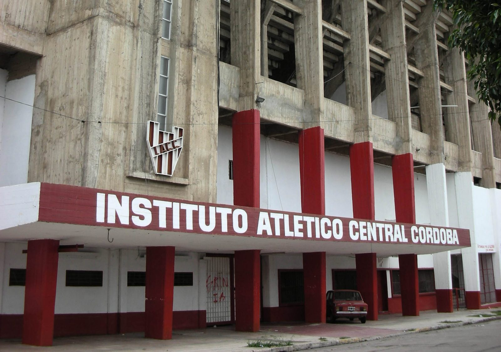

Fútbol · Instituto
Instituto confirmó que recibirá a River en Alta Córdoba el sábado a las 22, sin público visitante
El club despejó las dudas sobre un traslado al Kempes por el césped, dañado tras dos recitales. Fuentes del Consejo de Seguridad Deportiva Provincial, citadas por El Doce y Cadena 3, ubicaron el cruce de cuartos del Clausura el 28 de noviembre, en el Monumental Presidente Perón.

Instituto jugará de local ante River Plate por los cuartos de final del Torneo Clausura de la Liga Profesional en su estadio de Alta Córdoba. El club lo confirmó este martes 24 de noviembre, tras varios días de incertidumbre por el estado del campo de juego. El cruce, según fuentes del Consejo de Seguridad Deportiva Provincial (Cosedepro) citadas por El Doce, Cadena 3 y La Gaceta, quedó programado para el sábado 28 de noviembre a las 22, en el Monumental Presidente Perón, solo con público local y sin venta de entradas para hinchas visitantes.
El club cortó las versiones de un traslado al Kempes
A través de sus canales oficiales, Instituto publicó una imagen del césped de su estadio junto a un mensaje breve, reproducido por El Doce, TN y La Gaceta: “Tranquilos… En el Monumental Pdte. Perón, como siempre”. El anuncio de esta mañana puso fin, al menos en cuanto a la sede, a las versiones de un nuevo cambio de escenario.
El Doce precisó que fuentes de Cosedepro confirmaron el día, el horario y el estadio. Cadena 3 coincidió en que se jugará el sábado a las 22 en Alta Córdoba, sin entradas para el público visitante. La Gaceta, que también citó a ese organismo, indicó que el encuentro será solo con hinchas locales. TN ratificó la sede a partir del mensaje del club, pero aclaró que el día y el horario aún aguardaban la confirmación formal de la Liga Profesional. A este martes no se halló un comunicado del organizador con la agenda completa de los cuartos de Primera. La programación del sábado a las 22 se toma de esas fuentes de Cosedepro.
El césped, dañado tras dos recitales, había abierto la duda
La incertidumbre no era caprichosa. El Monumental Presidente Perón había albergado los shows de Tan Biónica y de María Becerra, y el campo de juego quedó con daños que obligaron a evaluar su estado, según El Doce y La Gaceta. TN situó el recital de María Becerra el sábado previo. Por ese mismo motivo, Instituto debió trasladar al Kempes su localía de octavos ante Huracán.
Esa alternativa volvió a considerarse para el partido con River. El estadio mundialista habría permitido un escenario de mayor capacidad y la eventual habilitación de público visitante. El Doce señaló que, al confirmarse Alta Córdoba, quedó descartada la asistencia de hinchas de River. La dirigencia, de acuerdo con El Doce y TN, priorizó la ventaja de jugar en su cancha, un derecho que Instituto obtuvo al terminar primero en su zona en la fase regular. El club, informaron El Doce y La Gaceta, trabaja ahora para dejar el césped en condiciones.
La Gloria llegó con un triunfo sufrido; River, con un 3-1 en Núñez
Instituto accedió a esta instancia el domingo 22 de noviembre, al vencer 2-1 a Huracán en el Kempes. El resultado, la condición de local del equipo cordobés —primero de la Zona A— y el estadio constan en la programación de octavos de la Liga Profesional de Fútbol. El árbitro fue Darío Herrera.
Los goles no figuran en ese parte, pero coinciden DeporTV y Cadena 3: Alex Luna abrió el marcador en el primer minuto —DeporTV lo ubicó a los 55 segundos— y Facundo Suárez marcó el 2-0 a los 20 minutos del primer tiempo, tras un centro de Jeremías Lázaro. En el complemento, Jordy Caicedo descontó de cabeza a los 20 minutos, en un córner de Facundo Waller, según la emisora pública. Giuliano Cerato fue expulsado por doble amarilla a los 32 minutos del segundo tiempo.
El triunfo tuvo costos: Lázaro y Luna dejaron el campo lesionados en el primer tiempo, de acuerdo con DeporTV y Cadena 3. Esta edición no da por confirmada su ausencia ante River, porque no hubo, al cierre, un parte médico público sobre su disponibilidad. Instituto es dirigido por Diego Flores; Huracán, por Diego Martínez.
River llegó al mismo cuadrante el mismo domingo, al ganarle 3-1 a Lanús en el Estadio Monumental de Núñez, según la Liga Profesional. El equipo de Leonardo Ponzio visitará así a la Gloria en Córdoba.
De los tres grandes de Córdoba, solo Instituto sigue en carrera
El cruce deja a Instituto como el único club cordobés de Primera División que permanece en los playoffs del Clausura. Belgrano quedó eliminado el viernes 20 de noviembre en el estadio José Amalfitani: empató 2-2 con Vélez Sarsfield y cayó 3-1 en los penales, de acuerdo con la Liga Profesional. Talleres no integró el cuadro de octavos publicado por el organizador.
Instituto será local porque terminó primero en su zona. El ganador avanzará a las semifinales. En las aclaraciones reglamentarias publicadas por la Liga Profesional para los octavos de final del Clausura —la instancia previa, de la misma fase de eliminación directa— se estableció que, ante igualdad en los 90 minutos, se jugará un tiempo suplementario de 30 minutos, en dos períodos de 15, y, de persistir el empate, tiros desde el punto penal, conforme al Reglamento General de la AFA. TN informó el mismo procedimiento para este cruce de cuartos.
Fuente
Liga Profesional de Fútbol de AFA, programación y resultados de los octavos de final del Torneo Clausura Mercado Libre 2026 · El Doce, 24 de noviembre de 2026 · Cadena 3, 24 de noviembre de 2026 · Todo Noticias (TN), 24 de noviembre de 2026 · DeporTV, 22 de noviembre de 2026 · La Gaceta, 24 de noviembre de 2026